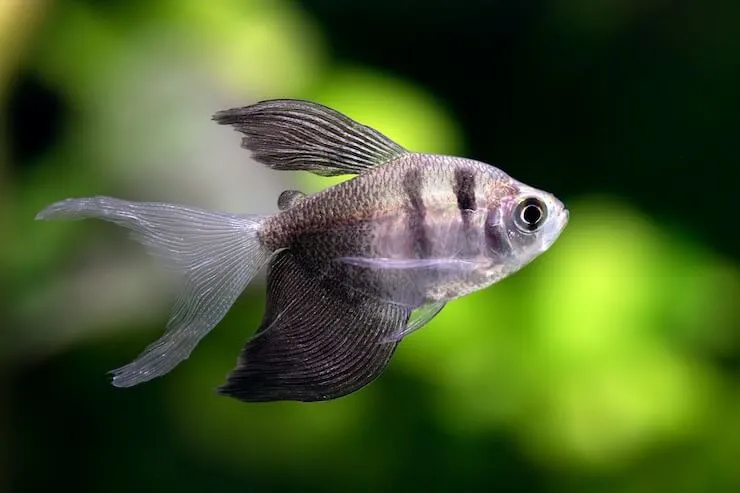

Siyah Tetra (Gymnocorymbus ternetzi), Güney Amerika’nın Paraguay Nehri havzasında yaşayan ve akvaryum hobisinin en sevilen tatlı su türlerinden biridir. Gümüşi gövdesi üzerinde belirgin siyah dikey çizgiler ve uzun, akıcı yüzgeçleriyle dikkat çeker. Bu görünümü nedeniyle “Black Skirt Tetra” veya “Petticoat Tetra” olarak da bilinir. Oldukça dayanıklı ve uyumlu bir türdür; bu nedenle akvaryuma yeni başlayanlar için ideal seçimdir. Barışçıl yapısı sayesinde sürü halinde beslenir ve diğer küçük, uyumlu türlerle birlikte rahatça yaşayabilir. En az 6–8 bireylik gruplar halinde beslendiğinde daha sosyal ve sağlıklı davranışlar sergiler. Siyah Tetra balıkları 22–28°C sıcaklıkta, hafif asidik veya nötr pH değerine sahip sularda sağlıklı şekilde yaşar. Akvaryumda bitkilerle süslenmiş doğal ortam ve geniş yüzme alanı, onların huzurlu davranışlarını destekler.